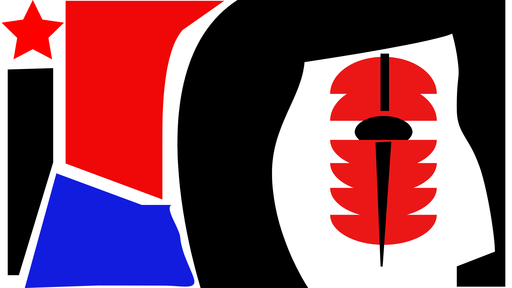

A pintura representa a Conferência de Berlim de 1884-85, onde os impérios dividiram a Africa entre si.
Os homens brancos necrocapitalistas, que são a classe dominante, se tornaram a maior ameaça
contra a vida na Terra.
Para eles e seus exércitos, forças revolucionários não devem existir e impedir a continuação de
sua exploração, genocídios e devastação planetária.
A força que se opõe ao capitalismo é o conhecimento ancestral de existir e ser na Terra como
pessoa, que deseja ser livre e feliz, não apenas como índividuo isolado, mas sim como
coletividade. O imperialismo necrocapitalista foi e continua sendo capaz de subjugar as pessoas
e povos na medida em que aniquila outras formas de organização humana, cujo resultado é o
esquecimento de quem e o que somos além de meros servos ou escravos para satisfazer as
necessidades abomináveis da classe dominante dos impérios da america e da europa.
Partindo do trabalho realizado pela intelectual marxista Silvia Federici, é possível e
necessário afirmar que, nos núcleos imperiais e nas colônias há, de fato, a continuação e
manuntenção de sistemas servis e escravistas de trabalho que afetam a maior parte das
populações.
Nos terrítorios ocupados militarmente por necrocapitalistas imperiais, não existe acumulaçao de
riqueza e extração de recursos/matérias-primas sem trabalho humano e não há trabalho humano sem
o trabalho feminino de cuidado e reprodução da espécie e, em relação ao trabalho familiar
doméstico, as mulheres trabalham para garantir o fornecimento de novas trabalhadores e
trabalhadores e a sobrevivência destes núcleos familiares. Trata-se, portanto, de trabalho
forçado e não-remunerado, na medida em que alternativas de modos de viver e trabalhar são
aniquiladas ou reprimidas, onde a própria existência no sistema necrocapitalista é uma violência
e ameaça constantes aos corpos e à dignidade. Para as mulheres, é normalizado o estupro,
mutilações no nascimento de bebês, maior exposição à elementos tóxicos/nocivos, além da classe
dominante transformar relacionamentos e sexo como forma de dissipar as tensões físicas e mentais
causadas pela exploração imperial, impedindo o cultivo da consciência de classe e o surgimento
de insurgência, mantendo o ciclo de criação de mais pessoas.
A guerra do capitalismo contra os povos e a Terra para extrair recursos também é uma guerra
contra os corpos e a felicidade. Por não existir acúmulo de riqueza sem o trabalho de pessoas e
o controle militar dos meios de produção, sejam corpos, terras ou indústrias, é necessário impor
um tipo de existência que rompa com os laços ancestrais com a terra e a vida, caracterizada pela
liberdade de transitar por territórios, coletar e plantar a própria comida, acesso à agua não
contaminada, comer alimentos saudáveis, celebrar os próprios deuses e deusas, entender que não
há separação da felicidade das pessoas e a saúde da terra e seres não-humanos.
Os povos originários e indígenas são alvos e ameaças ao necrocapitalismo por causa de seus territórios e por conhecerem a verdadeira liberdade.
No mundo todo, era predominante a existência de territórios onde a terra era comunal e livres de exploração, ou seja:
não pertencia apenas a uma pessoa ou corporação e tudo era usufruido pelas pessoas sem
diferença de classes sociais.
Nesses territórios não existiam a servidão ou escravidão como forma de acumulação de riqueza,
sistemas que eram normalizados na Grécia antiga e no império romano, as bases da "civilização
ocidental", e foram adotadas por impérios europeus após, nas Américas e outros continentes,
e que continua até hoje, sob o
disfarce sofisticado de trabalho "livre e assalariado" e "livre mercado". Ora, se as pessoas não têm acesso
à terra e água sem a precisarem pagar quantias absurdas por isso, não há liberdade de fato. Ou
aceitam a servidão por um salário ou vivem na penúria, na crimilidade ou morrem, melhor
exemplificado pelo núcleo imperial americano, onde as pessoas pagam pra existir e vivem para
consumir e lutar em guerras para manter o império. Além disso, a decadente classe dominante
americana impôe formas de existência anti-naturais e artificais, oferecendo comida falsa,
ambientes falsos, conforto falso, felicidade falsa. O modo de vida americano só é considerado o
ápice da humanidade para a classe dominante que depende da crença cega de pessoas que não
possuem outra alternativa além da existência que permite que os homens brancos ricos fiquem mais
ricos ao custo de sangue, sofrimento e instabilidade climática planterárias.
O comunismo, além de uma alternativa necessária ao necrocapitalismo, é a forma ancestral de
existir na Terra como pessoas e entender nosso lugar, realmente ter raízes, independentemente do lugar,
e conhecer o que é a verdadeira felicidade e dignidade.
Na língua tzotzil, faladas por povos em territórios zapatistas, no México, a palavra a'mtel
representa o trabalho verdadeiro:
aquele feito para a própria família e comunidade. Com esse tipo de trabalho, cada um tem seu pró- prio tempo, ninguém pode determinar quanto e como cada um deve trabalhar. Em outras palavras, o que determina esse trabalho são as necessidades de cada família, comunidade e da organização autônoma.
Um mundo onde caibam muitos mundo, Ana Paula Morel (2023)
Por fim, a atual situação de exploração de homens e mulheres apenas terá um fim com a retomada dos territórios, a expulsão de necrocapitalistas e seus exércitos, e a instauração do caminho comunista no mundo todo, que possibilitará a existência de futuros melhores.
